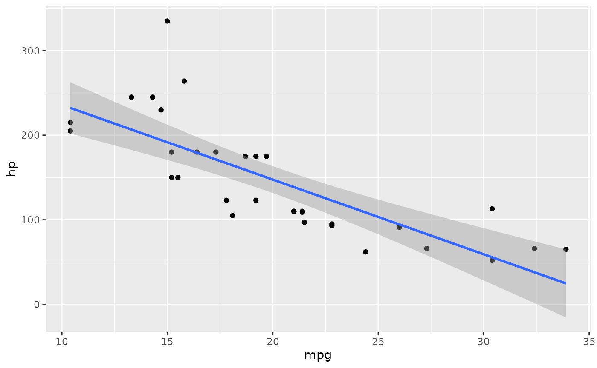
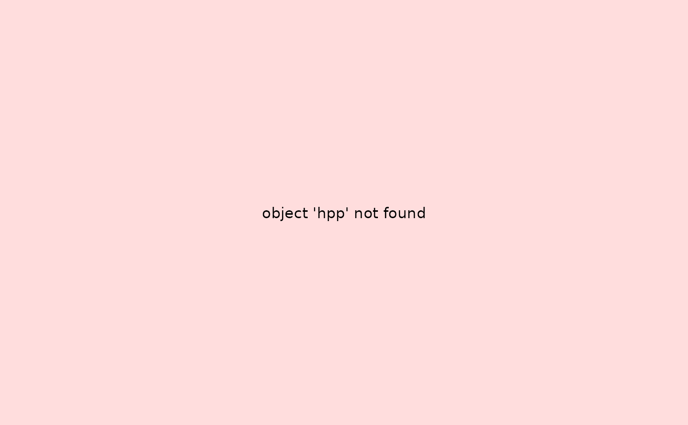

Recording ggplot Objects with chronicler
recording-ggplot.RmdIntroduction
{chronicler} allows you to “record” ggplot objects so
you can trace their creation, and debug plots without immediately
rendering them. In case of an error, an “error plot” gets shown instead,
which can be useful when rendering documents. This way, plots that fail
don’t stop the whole rendering process. Unlike typical functions,
ggplots are lazily evaluated, so capturing their construction requires
special handling.
This vignette demonstrates how to record and inspect ggplot objects
using record_ggplot().
Basic Recording
Create a simple plot and record it:
r_plot <- record_ggplot(
ggplot(mtcars, aes(x = mpg, y = hp)) +
geom_point() +
geom_smooth(method = "lm")
)
#> `geom_smooth()` using formula = 'y ~ x'The object r_plot is now a chronicle.
You can access the actual ggplot object using unveil():
unveil(r_plot, "value")
#> `geom_smooth()` using formula = 'y ~ x'
And inspect the log to see what happened during construction:
read_log(r_plot)
#> [1] "Complete log:"
#> [2] "OK! ggplot(mtcars, aes(x = mpg, y = hp)) + geom_point() + geom_smooth(method = \"lm\")() ran successfully at 2025-08-14 14:36:04.355479"
#> [3] "Total running time: 0.770904064178467"Why record ggplots
The main benefit is to capture errors and return an “error” plot, which is a simple plot that shows the error message that was logged during the build process. This is especially useful when working on a document, because this way, if the plot fails, rendering can continue. This allows you to preview documents and fix plots later.
Handling Errors and Warnings
Typos in aesthetic mappings or layer definitions will be captured in the log rather than stopping execution:
r_bad <- record_ggplot(
ggplot(mtcars, aes(x = mpg, y = hpp)) + # typo: 'hpp'
geom_point()
)
r_bad
#> NOK! Value computed unsuccessfully:
#> ---------------
#> Just
#>
#> ---------------
#> This is an object of type `chronicle`.
#> Retrieve the value of this object with unveil(.c, "value").
#> To read the log of this object, call read_log(.c).
read_log(r_bad)
#> [1] "Complete log:"
#> [2] "NOK! ggplot(mtcars, aes(x = mpg, y = hpp)) + geom_point()() ran unsuccessfully with following exception: object 'hpp' not found at 2025-08-14 14:36:05.534294"
#> [3] "Total running time: 0.0310990810394287"Tips
- Use
unveil(..., "value")to extract the ggplot object for rendering. - Use
read_log()to review warnings, errors, and messages during plot construction. - Stepwise recording is useful in complex plotting pipelines or when experimenting interactively.
Conclusion
record_ggplot() provides a safe, traceable way to build
ggplot objects, making complex plots easier to debug and understand. By
integrating ggplot recording with {chronicler}’s logging
and chaining capabilities, you can maintain reproducible, debuggable
plotting workflows.